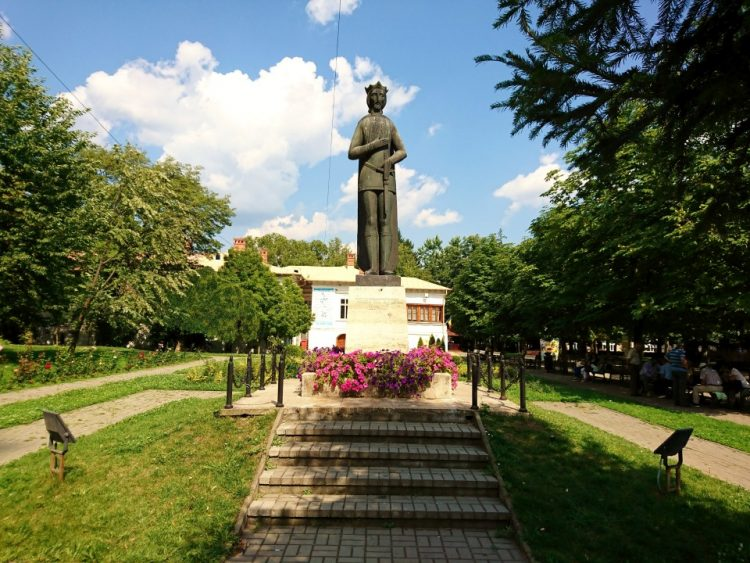
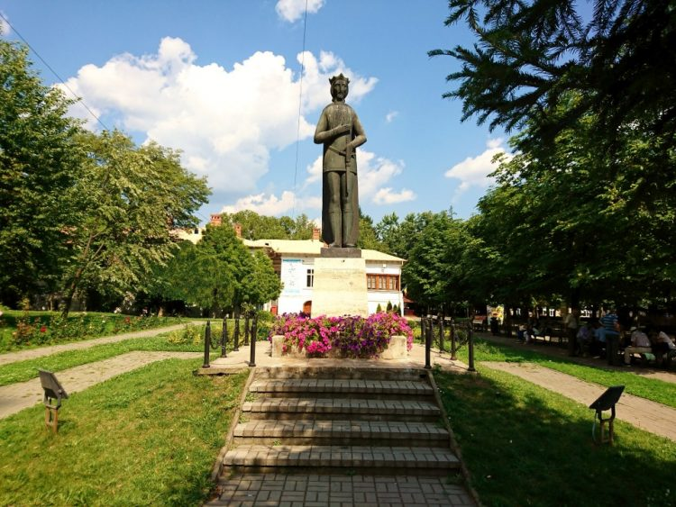

Eduard George Vacaroiu

Curiosità su di me
 

Dove e quando sono nato
Io sono nato il 16 Febbraio 2003 a Râmnicu Vâlcea, in Romania, una città composta da circa 98 mila abitanti, Vâlcea si trova nell'area centro-meridionale e nella parte nord-orientale della regione storica dell'Oltenia
Situata ai piedi delle Alpi Transilvaniche, la città è situata sulla riva destra del fiume Olt.
Nella città di Râmnicu Vâlcea sono presenti numerose chiese e luoghi di culto. Nella prima metà del XX secolo la città era conosciuta come
"città dei pensionati" per gli ampi spazi verdi e la quiete del posto, il principale parco cittadino è il parco Zăvoi, uno dei più antichi del Paese, essendo stato creato il 9 agosto 1850
Nel parco si trova la fontana Turbatu, attorno alla quale nel 1848 venne cantato per la prima volta Deșteaptă-te, Române!,
il canto patriottico che nel 1990 divenne l'inno nazionale della Romania.
Nel centro città è presente il parco intitolato al principe Mircea il Vecchio, all'interno del quale è presente una statua dedicata allo stesso principe.
Non lontano dal parco è presente il monumento alla guerra d'indipendenza rumena, eretto nel 1915 e opera dello scultore Ioan Iordănescu.
Sono presenti in città un museo di storia e un museo d'arte, all'interno del quale è presente una mostra permanente di opere di pittura rumene.
La casa memoriale di Anton Pann è dedicata al compositore che aveva scritto la musica del canto Deșteaptă-te, Române! e venne realizzata a metà del XIX secolo.
Dove Vivo
Io e la mia famiglia siamo venuti in Italia nel 2008, quando io avevo 5 anni, ora vivo qui da circa 7 anni, prima abitavo in una città vicino Pistoia, io vivo nella zona di Peretola, a 500m dall'aereoporto.
Sport Preferiti
I miei Sport preferiti sono 2: la Formula 1 e il Calcio, quello a cui sono più legato è il calcio, perchè fin da piccolo mi divertivo a giocare ai giochini di calcio, ma anche giocare con gli amici.
Io tifo Fiorentina, io tifo Fiorentina, per 2 motivi, il primo perchè è di Firenze, però mi è sempre piaciuta la storia della Fiorentina e il secondo motivo, perchè è stata la squadra di Adrian Mutu, uno dei attacanti rumeni più forti di sempre.
Il mio calciatore preferito è Cristiano Ronaldo, perchè oltre a essere un campione, è una di quelle persone che è partita dal basso ed è arrivata sul tetto del mondo, invece della Fiorentina, il mio giocatore preferito è Dusan Vlahovic.
Per quanto riguarda la Formula 1, non è a tanto che la seguo, ma col tempo ho imparato che è un sport bellissimo ma anche rischioso, per questo ho grande ammirazione e rispetto per i piloti di Formula 1, sono tifoso della Scuderia Ferrari, una delle aziende automobilistiche più famose al mondo
(se non la più famosa), il mio pilota preferito è Charles Leclerc, uno dei più giovani piloti a vincere una gara in F1 con la Ferrari
Cibo Preferita
Per quanto riguarda il cibo, non ho un piatto preferito, ma se devo scegliere un piatto scelgo la pizza.

I miei Hobby
I miei Hobby preferiti riguardano principalmente 2 ambiti: quello della finanza personale e quello di guardare film/serie Tv sulle varie piattaforme steaming.
Di solito per tenermi aggiornato sul andamento della borsa e delle crypo, leggo le varie news sui vari siti (per esempio yahoo finanza oppure Cryptocurrency), invece per imparare cose nuove, leggo libri dedicati all'educazione finanziaria e alla crescita personale oppure guardo video dedicati a questo argomento.
Per quanto riguarda le piattaforme di streaming, mi piace guardare film d'azione oppure serie TV, la mia serie TV preferità è La Casa De Papel, invece non ho un film preferito ma una saga, quella di Fast&Furious.
Un altra cosa che mi piace fare è ascoltare la musica oppure parlare su Discord con gli amici, oppure giocare alla PlayStation, il mio genere musicale preferito il POP, ascolto molti artisti, ma tra tutti il mio preferitto è:
Abel Makkonen Tesfaye, in arte The Weeknd, un artista canadese.
I miei piani futuri
Dopo aver preso la laurea, ho intenzione di tornare in Romania per fare l'università, nel frattempo ho intenzione di lavorare e crearmi più fonti di guadagno, ho intenzione di investire i miei soldi, come lavoro mi piacerebbe lavorare sempre nel ambito informatico, e più avanti nel tempo, fondare una mia azienda e raggiungere il mio obbittivo,
cioè diventare imprenditore e raggiungere la liberta finanziaria entro i 40 anni.
.